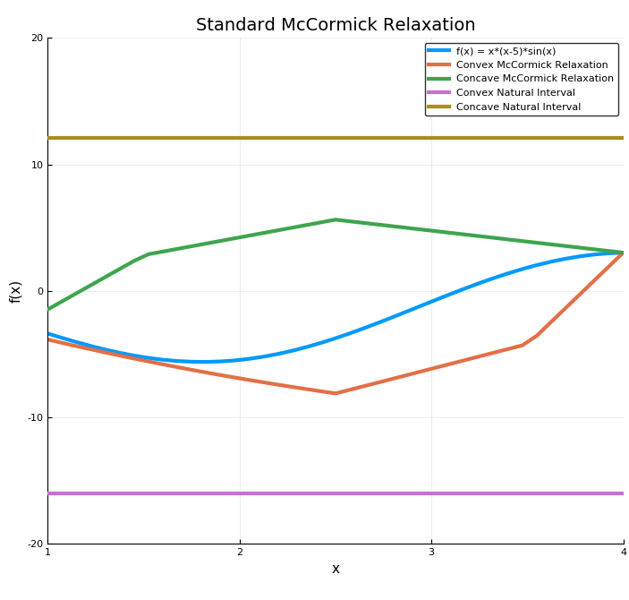
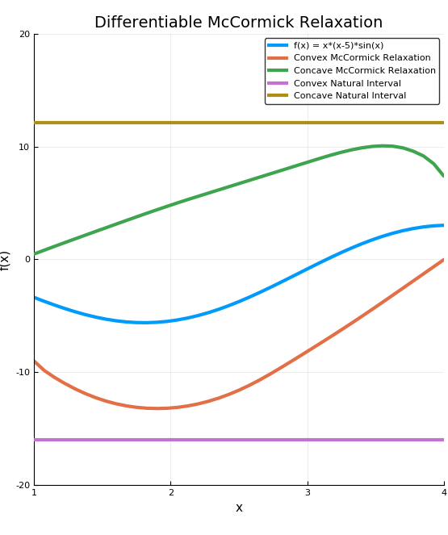
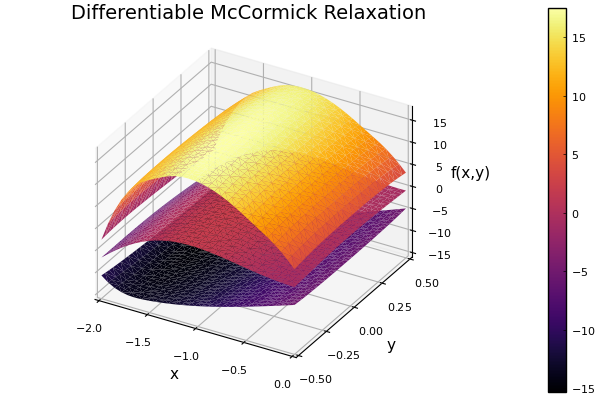

Basic Usage
Bounding a Univariate Function
In order to bound a function using a McCormick relaxation, you first construct a McCormick object (x::MC) that bounds the input variables, and then you pass these variables to the desired function.
In the example below, convex/concave relaxations of the function $f(x) = x (x - 5) \sin(x)$ are calculated at $x = 2$ on the interval $[1, 4]$.
using McCormick
# Create MC object for x = 2.0 on [1.0, 4.0] for relaxing
# a function f(x) on the interval Intv
f(x) = x*(x - 5.0)*sin(x)
x = 2.0 # Value of independent variable x
Intv = interval(1.0, 4.0) # Define interval to relax over
# Note that McCormick.jl reexports IntervalArithmetic.jl
# and StaticArrays. So no using statement for these is
# necessary.
# Create McCormick object
xMC = MC{1,NS}(x, Intv, 1)
fMC = f(xMC) # Relax the function
cv = fMC.cv # Convex relaxation
cc = fMC.cc # Concave relaxation
cvgrad = fMC.cv_grad # Subgradient/gradient of convex relaxation
ccgrad = fMC.cc_grad # Subgradient/gradient of concave relaxation
Iv = fMC.Intv # Retrieve interval bounds of f(x) on IntvBy plotting the results we can easily visualize the convex and concave relaxations, interval bounds, and affine bounds constructed using the subgradient at the middle of $X$.

If we instead use the constructor xMC = MC{1,Diff}(x, Intv, 1) in the above code and re-plot, we arrive at the following graph. Note that these relaxations are differentiable, but not as tight as the nonsmooth relaxations.

Bounding a Multivariate Function
This can readily be extended to multivariate functions, for example:
\[\begin{aligned} f(x,y) = \big(4 - 2.1 x^{2} + \frac{x^{4}}{6} \big) x^{2} + x y + (-4 + 4 y^{2}) y^{2} \end{aligned}\]
using McCormick
# Define function
f(x, y) = (4.0 - 2.1*x^2 + (x^4)/6.0)*x^2 + x*y + (-4.0 + 4.0*y^2)*y^2
# Define intervals for independent variables
n = 30
X = interval(-2,0)
Y = interval(-0.5, 0.5)
xrange = range(X.bareinterval.lo, stop=X.bareinterval.hi, length=n)
yrange = range(Y.bareinterval.lo, stop=Y.bareinterval.hi, length=n)
# Calculate differentiable McCormick relaxation
for (i,x) in enumerate(xrange)
for (j,y) in enumerate(yrange)
z = f(x, y) # Calculate function values
xMC = MC{1,Diff}(x, X, 1) # Differentiable relaxation for x
yMC = MC{1,Diff}(y, Y, 2) # Differentiable relaxation for y
fMC = f(xMC, yMC) # Relax the function
cv = fMC.cv # Convex relaxation
cc = fMC.cc # Concave relaxation
end
end